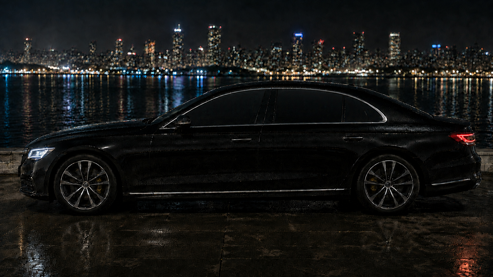

Bespoke privacy glass
The glass,
taken apart.
Seven layers between the street and your seat. Scroll to separate them.
VLT 5·IR 98%·UV 99%·AS2·43R
From the street
Nobody's business but yours.
At five percent light transmission the glass reads as black lacquer from the pavement. The city sees its own lights coming back at it. The cabin, the calls and the hours between meetings stay where they belong.
The view out stays clean. Ceramic works on heat and glare rather than clarity, so the skyline at night is still the skyline.

The numbers
- 0%
visible light through
- 0%
infrared heat rejected
- 0%
ultraviolet blocked
- AS2
laminated safety rating
- 43R
certified for the road
Choose your shade
Four depths of quiet.
The process
-
01
Consult
Tell us the vehicle and the job it does. We recommend a shade and book a slot that suits the diary, not ours.
-
02
Template
Every pane is plotter-cut to your exact glazing before we arrive. Nothing is trimmed against your paintwork.
-
03
Install
Fitted at your address or ours in an afternoon, with cure notes and the certification paperwork in hand before we leave.
Executive cabins · London
Arrive differently.
One vehicle or a fleet. Tell us what you drive and we come back the same day with a shade, a price and a date.